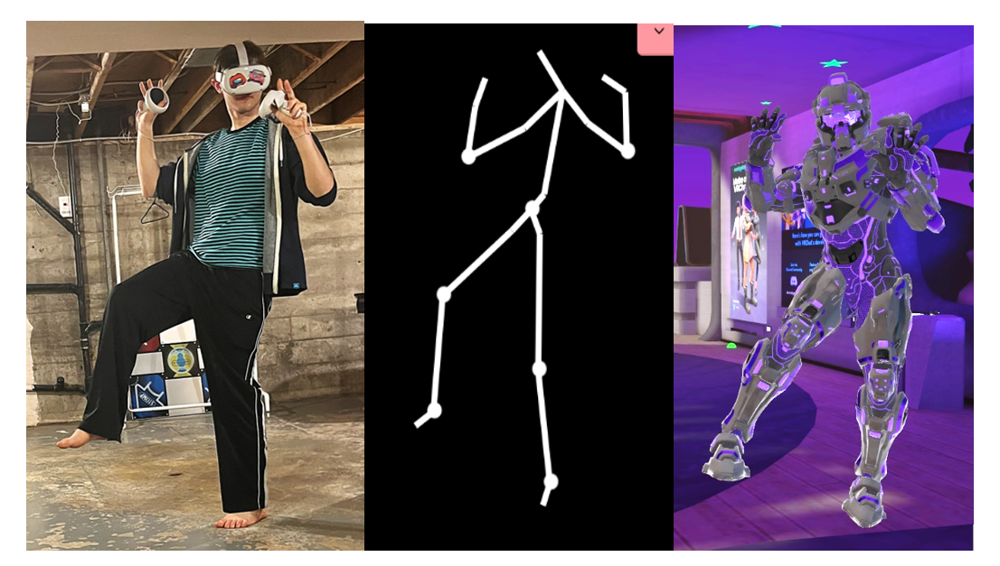
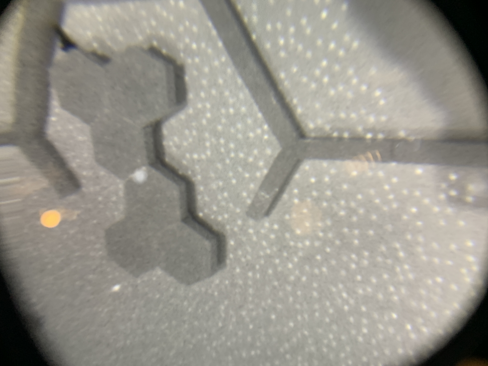
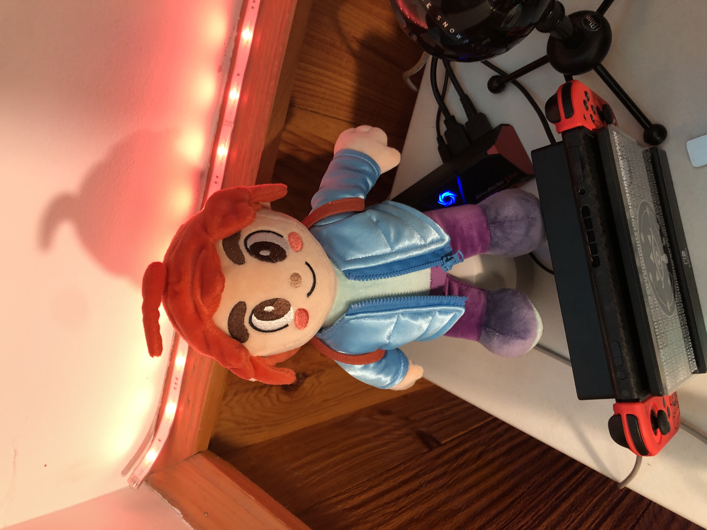
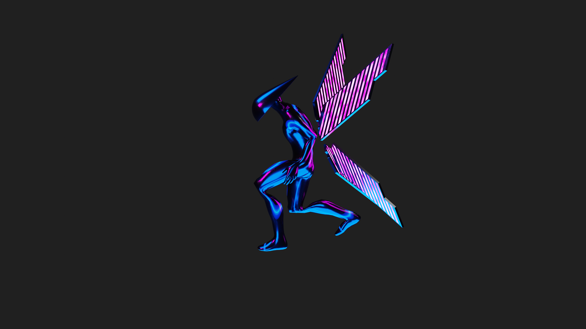
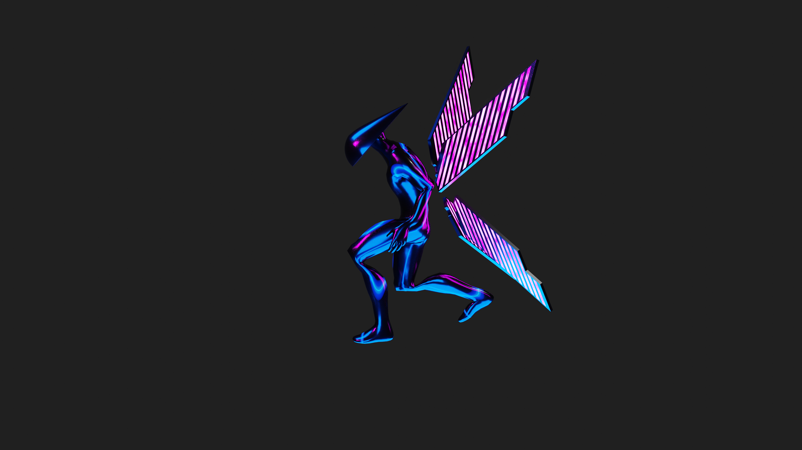
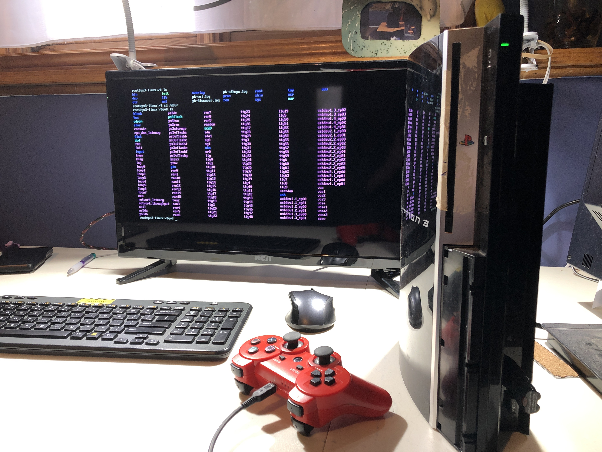

My research project into the math behind VR and body tracking technology
 WRITE-UP COMING EARLY 2023, VIDEO COMING LATER IN 2023
As my final report for my Discrete Math course as a Second-year Software Engineer, I made an in-depth writeup analyzing the fundamental technologies and mathematics behind the Microsoft Xbox 360 Kinect and Meta Quest 2. I use these devices for my VRChat Full-Body tracking setup. In my research, I learned about Convolutional Neural Networks and the SLAM technique for finding the 3D position of a 2D camera, among other mathematical topics. I then presented my discoveries in a descriptive report loaded with pictures that I (mostly) generated from my own hardware! I really enjoyed working on this report and intend to adapt it to a YouTube video at some point in 2023. I can't release the full report right now since it is still being graded. I will release it some time early 2023.
FastFacts: AI reads my textbooks for me

CHECK IT OUT AT GITHUB AND DEVPOST!
My project for Hack Western 9! Using Google's Cloud Vision API, GitHub pages hosting and the hackathon sponsor CoHere, users of our app, FastFacts, can take a picture of a textbook (or really any written work) and recieve an AI-generated text summary! We OCR text from the source image and run it through CoHere (at the time chatGPT didn't exist). Since we use APIs, no servers are needed to host FastFacts! It is entirely front-end and API based. The site was taken down after the hackathon because my API keys expired. You can still see the cool CSS animations on the site though!
Converting my student rental into a smart home!
VIDEO COMING SOMETIME IN 2023
This project is so massive that pictures can't explain it all, so I'll release a video detailing everything in the near future. In the meantime, have Madeline sitting on my Google Home. Essentially, I converted my student rental into a smart home using consumer-ready tech and DIY parts. We have Philips Hue and other smart lights, security cameras, Google Home/Nest speakers, AirPlay/Chromecast, door sensors, motion sensors, Logitech Harmony, and so much more. There is RGB literally everywhere and it actually has functional use: as an example, the lights in the bedrooms flash red when the front door is opened. We have Ubiquiti WiFi which our home to see who's at home (based on mobile phone WiFi), and can run automations based on their presence, or lack thereof. This is just a small portion of what we have built and we're constantly adding new things, which is why the video hasn't been released yet.
CategoryWalls: Exploiting Windows 11 bugs!
GET IT ON GITHUB
See the coloured edges in the above photos? CategoryWalls is an absolute lifesaver for me when I only have one screen to work with. Windows 11 has a bug/feature where in the Task Switcher, the corner of your wallpaper is visible even when windows are maximized. CategoryWalls exploits this feature by adding a coloured stripe to the corner of your wallpaper. I use this to "categorize" groups of desktops: If I have windows for multiple university classes open, I can have three or four say 'calculus' desktops that are blue, and a couple 'data structures' desktops that are green. See some examples of what I mean on the GitHub repo for this project.
HoopNet: A smart climate control system for a hoop house farm!
Click to expand images


SEE IT ON GITHUB
As my ES1050 project at Western University, my teammates and I were tasked to build a climate control system for Urban Roots London's Hoop house farm! Hoop houses are greenhouses whose plastic side walls can raise up slightly, allowing moisture and humidity to vent out. We designed a versatile and modular internet-connected control system that mechanically raised and lowered these plastic sides, based on user-configurable temperature and humidity parameters. The intention was to design a scalable network system similar to Home Assistant where each hoop house's controls (lift-sides and a smart plug for a fan) was connected to a low cost Raspberry Pi-based Control Unit. A central server placed on-site would connect to the Control Units. (one per hoop house) with WiFi -- likely using some form of high-gain AP like a U6-LR -- and collecting data from the houses. The hope was to then provide remote control and access to save Urban Roots from actually sending someone out to the farm if it was too humid inside one of the houses. We found that this project was too ambitious to complete in one semester, and focused on completing the Control Unit which is pictured above. This project was a big inspiration for me to deep-dive into IoT as detailed in my Smart Home project above.
Radiant: an overkill blender-animated YouTube intro!
 

YOUTUBE LINK WITH TIMESTAMP
As part of a massive rebrand of my YouTube channel to make it fit better with my university life, Radiant was meant to be an absurdly overkill video intro that I would use for years and years. I use the files to create snippets of my 3D character for video thumbnails as well! The video demoing the intro got copyright-claimed so I can't embed it to this website. See the link above! The original intro video also took 6 hours to render on five gaming laptops :D
Boom or Doom: The future of AI
SEE IT ON DEVPOST
Winner of best domain name at Hack Western 8, Boom or Doom was my first hackathon project. Using event sponsor Dasha.ai, we attempted to cold-call the entire city of London, Ontario with a quiz and show the results on a website. While the program was fully functional, we ran into timing issues while collecting calls: very few call recipients actually answered! Due to Amazon Web Services fees, the website had to be shut down, but the video demo is still up.
SmartFrame
GET IT FROM GITHUB
What started as a way for me to upcycle a nice-looking old digital photo frame turned into a massive, modular project that I still consider to be my coding magnum opus. Using Python, a Raspberry Pi and modular "plugins", SmartFrame is able to grab data from all of your favourite services like: Philips Hue, Spotify, the weather, your calendar, YouTube, your local network and NAS, COVID case data, and many others! It uses this data to create a clean infoboard that can be displayed on any screen that understands what a .jpg file is.
Installing Linux on a PlayStation 3
COMPLETED IN 2020
I wanted to build a file server and had this console lying around. Using custom firmware, I installed Linux on my old PlayStation 3. As seen in the photo, it fully boots and functions. However there were certain limitations that prevented this installation from being viable for its original use as a home server, most notably the console's 256 MB of ram and the fact that the console's GPU doesn't work in linux. Also, the Linux installation tools partitioned only 10 GB to Linux, too small for use in a file server.